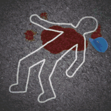
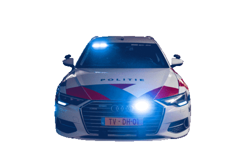

Selecteer Rol
Ik ben een Student
Ik ben de Docent
Open Leaderboard

Briefing: Aanmelden
Eenheid Alpha (A)
Eenheid Bravo (B)
Eenheid Charlie (C)
Eenheid Delta (D)
Eenheid Echo (E)
Eenheid Foxtrot (F)
Eenheid Golf (G)
Eenheid Hotel (H)
Eenheid India (I)
Eenheid Juliett (J)
Eenheid Kilo (K)
Eenheid Lima (L)
Eenheid Mike (M)
MELDEN BIJ CENTRALE
Docent Dashboard
Eenheid Alpha
Eenheid Bravo
Aanwezigen:
Geen
Verdeel in 2 Teams
Verdeel in 3 Teams
Reset Klas Data

Live Leaderboard